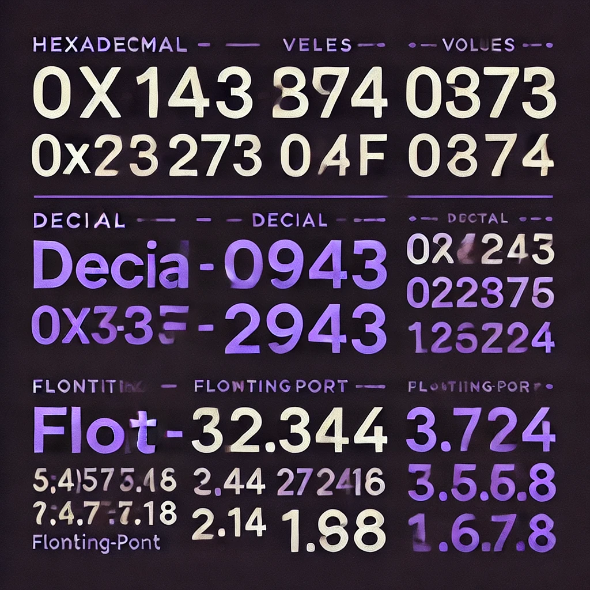
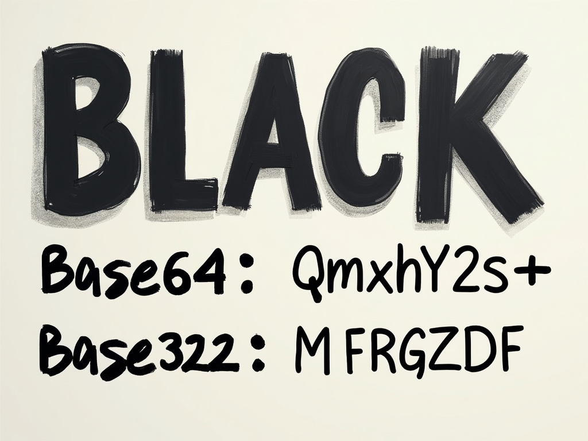
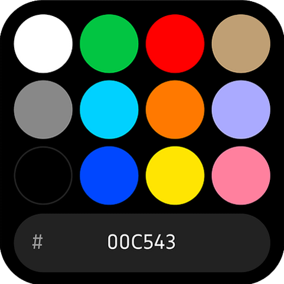
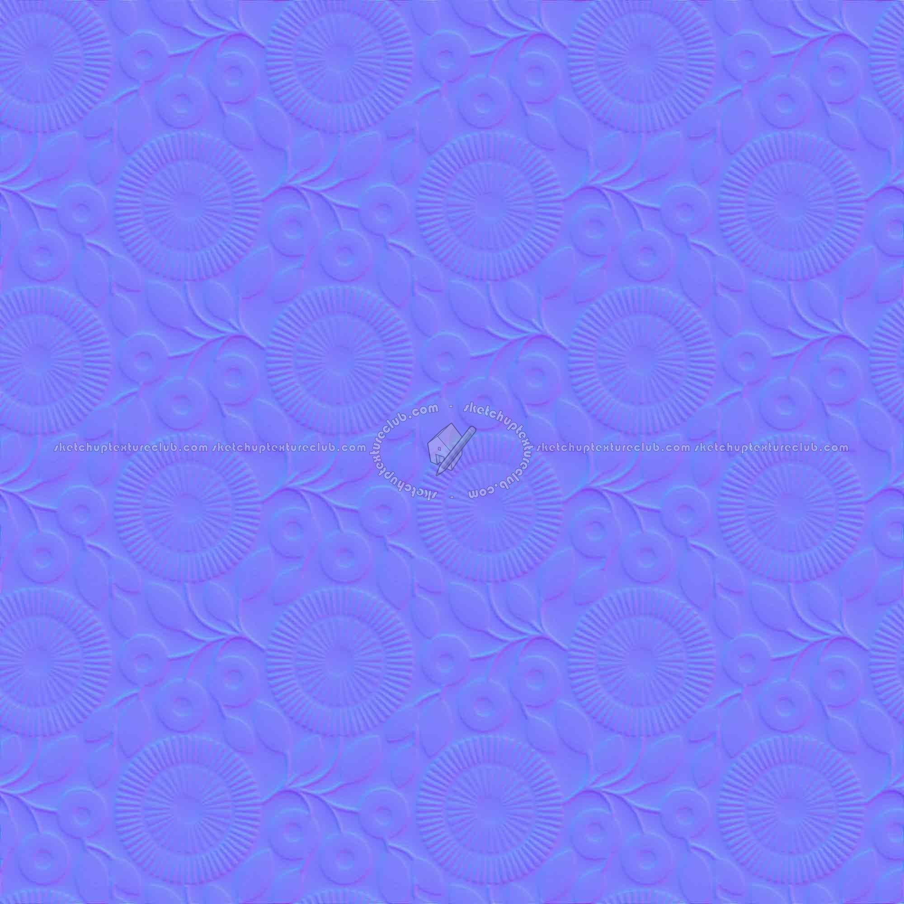

Hex/Dec/Float Converter

Convert between hexadecimal, decimal, and floating point numbers easily.
String Encoders Project

Encode and decode strings in multi formats.
ColorPicker

ColorPicker in ABGR format.
HD Projects
HDProject Versions Re-Uploaded by @BN_LOS.
Bytes Converter

Bytes Unit Converter.
Normal Map Generator

Normal Map Generator.